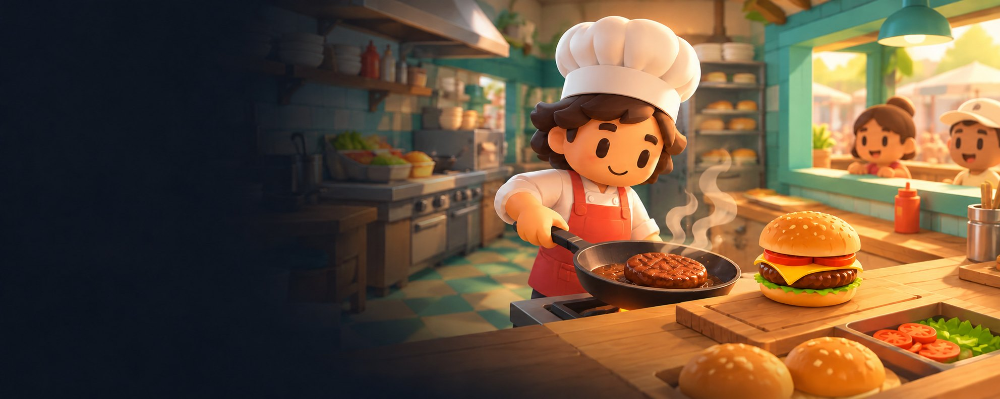

Good food.
Fast hands.
Collect fresh ingredients, cook and assemble the orders, then serve your waiting customers before the clock runs out.
Desktop: keyboard and mouse. Phones and tablets: touch controls; landscape recommended.

Your first service
Collect & prepare
Ingredients are on the left. Chop vegetables at the cutting boards and cook patties or sausages on the stoves.
Build the order
Combine food on a wood counter. Bun + cooked patty makes a burger. Add cheese and tomato for the deluxe. No plates needed.
Serve your customers
Carry a finished dish to the teal delivery spot on the right and interact. Match a ticket quickly to earn tips and combos.
Controls
Computer
WASD / arrows to move · E to pick up, combine or serve · hold F / Space to chop · Shift to run · Esc for the menu.
Phone or tablet
Drag the movement stick. Tap USE to interact. Hold CHOP to prepare food, or RUN while moving. MENU pauses solo play. Touch controls appear only on mobile.